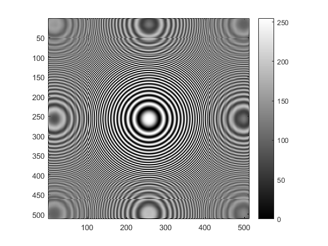
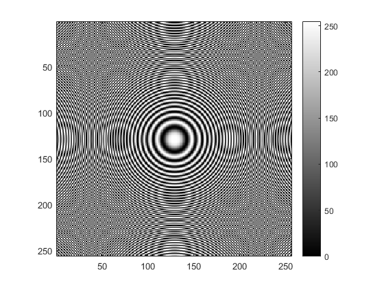
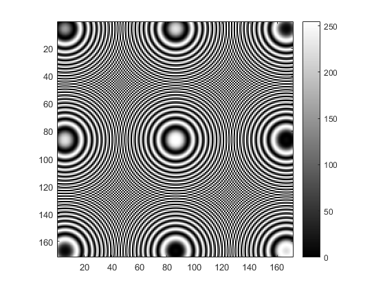
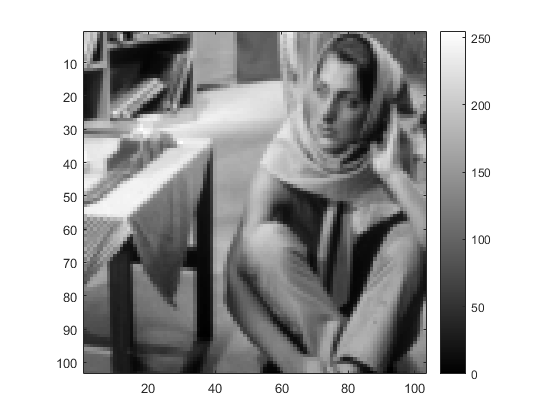
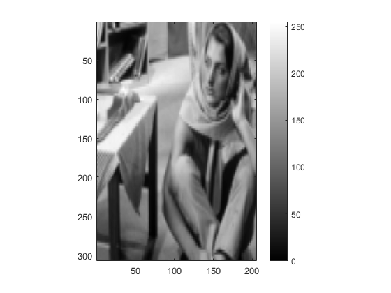

Part 1 : Resizing Images
Contents
tic;
Image Shrinking using Subsampling
Call function myShrinkImageByFactorD Function takes input d which is to be used as shrinking factor
myShrinkImageByFactorD(2); myShrinkImageByFactorD(3);  
Image Enlargement using Bilinear Interpolation
Call to function myBilinearInterpolation
myBilinearInterpolation('../data/barbaraSmall.png'); 
Image Enlargement using Nearest-Neighbor Interpolation
Call function myNearestNeighbourInterpolation Function takes inputs imagePath and imageType
myNearestNeighbourInterpolation('../data/barbaraSmall.png','png'); toc;
Elapsed time is 14.852986 seconds.